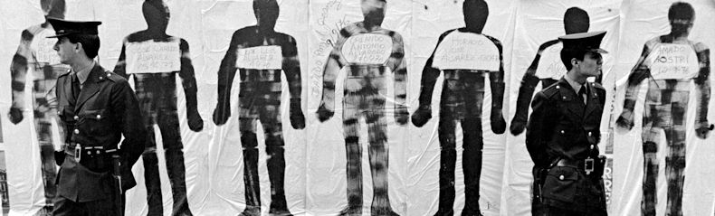

‚ÄúUnidad 3: TP 2 - Son 30.000 - Exploraci√≥n con la librer√≠a Presentes üìä‚Äù

Objetivos
Aplicar los conceptos clave del curso utilizando un dataset real.
Explorar patrones en los datos relacionados con la represión en Argentina.
Implementar transformaciones y limpieza de datos bajo la filosofía “tidy”.
Usar visualizaciones para comunicar hallazgos relevantes.
Trabajaremos con el paquete presentes, que contiene datos sobre personas desaparecidas y centros clandestinos de detención en Argentina.
Dataset: presentes::personas
üïµÔ∏è‚Äç‚ôÄÔ∏è Hip√≥tesis a explorar
Elegir una de las siguientes preguntas para investigar:
¿Existe una relación entre la edad de las víctimas y la fecha de desaparición?
¿Hubo diferencias en el número de víctimas según el género en distintas provincias?
¿Cuál era el perfil socioeconómico de las víctimas según su ocupación registrada?
¿Hay centros clandestinos que registran mayor cantidad de casos en ciertos periodos?
Consigna Paso a Paso
1. Preparaci√≥n del entorno üñ•Ô∏è
Cargar los paquetes necesarios (
tidyverse,presentes,janitor,validate).Importar los datos de
presentes::personas.Explorar la estructura de los datos con
glimpse()ysummary().
2. Transformaci√≥n de los datos üîÑ
Seleccionar las columnas necesarias para responder la hipótesis elegida (
select()).Limpiar nombres de variables con
janitor::clean_names().Crear nuevas variables si es necesario (
mutate(),if_else(),case_when()).Aplicar
across()para transformar múltiples columnas.Identificar y manejar valores faltantes o inconsistentes.
3. Análisis y exploraci√≥n üìà
Filtrar los datos relevantes (
filter()).Agrupar los datos por la variable de interés (
group_by()).Resumir la información clave (
summarise()).Explorar correlaciones y patrones (
count(),mean(),sd()).Realizar uniones con otros datasets si es necesario (
left_join()).
4. Visualizaci√≥n de los resultados üé®
Crear gráficos con
ggplot2para mostrar tendencias.Comparar variables utilizando
facet_wrap()ofacet_grid().Representar distribuciones con
geom_histogram()ogeom_density().Resumir categorías con
geom_bar()ogeom_col().
5. Interpretaci√≥n y conclusiones üìù
Responder la pregunta planteada con los datos analizados.
Destacar los principales hallazgos.
Plantear posibles limitaciones del análisis.
Sugerir líneas futuras de investigación.